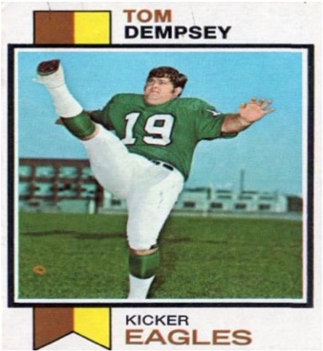

Overview
In less than one week, Fantasy Football will once again resume for the 2019 NFL season! While I’m looking forward to the impending draft, the start of the season brings back memories of a not-so-distant loss that left me one game shy of the championship. The loss stemmed from a missed field goal, leaving my team two points shy of victory. Of course, a myriad of factors beyond that missed field goal contributed to my fantasy demise, but those two points reinvigorated a question I’ve wondered about for the past few years: Why are kickers drafted in the last round?
Prevailing wisdom suggests that your kicker doesn’t matter. Some Fantasy Football leagues don’t even have kickers on the roster, which I think does a disservice to a player who probably doesn’t get invited to the cool team parties yet can decide the fate of a season in a single moment (like mine). As long as they suit up to take the field, the rest is out of your control. However, is it a suboptimal strategy to relegate your choice of kicker to the final round of the draft? Let’s find out!
Getting Started
Before loading any data or discussing techniques, we’ll begin by defining our analytical objective. An easy way to get started is by posing a simple question: “How many more points can I expect over a 16-game regular season if I draft the best kicker relative to the worst kicker?” We’ll answer this question in two steps. First, we’ll estimate the True field goal percentage for each kicker currently active in the NFL (as of 2016), which is analogous to a batting average in baseball or free-throw percentage in basketball. This parameter estimate will be used to compare the skill of one kicker to another. Second, we’ll translate our estimate into actual Fantasy Football points by simulating the outcomes 1000 football seasons for each kicker. Simulation enables us to quantify a realistic point differential between kickers, which is what we (the Fantasy Football team owners) will use to determine if we should try to select the best kicker by drafting in an earlier round.
With that question in mind, let’s load all pertinent libraries. The data can be downloaded directly from the 🌴 the codeforest github repo 🌲.
# Modeling
library(gamlss)
# Core packages
library(tidyverse)
# Visualization
library(ggplot2)
library(scales)
library(viridis)
library(ggridges)
# Global plot theme
theme_set(theme_minimal())
# Code Forest repo
repo <- 'https://raw.githubusercontent.com/thecodeforest/choosing_ff_kicker/master/'
# Helper function for visualization
source(file.path(repo, '/viz_theme/vizTheme.R'))There are several columns we won’t be using so we’ll select only the relevant ones.
stats_raw <- read_csv(file.path(repo, 'data/Career_Stats_Field_Goal_Kickers.csv')) %>%
clean_names() %>%
select(player_id,
name,
year,
games_played,
contains('made'),
contains('attempted'),
contains('percentage'),
-contains('extra'),
-longest_fg_made
)
glimpse(stats_raw)## Observations: 1,994
## Variables: 19
## $ player_id <chr> "jeffhall/2500970", "benagajanian/250…
## $ name <chr> "Hall, Jeff", "Agajanian, Ben", "Agaj…
## $ year <dbl> 2000, 1964, 1962, 1961, 1961, 1960, 1…
## $ games_played <dbl> 3, 3, 6, 3, 3, 14, 12, 10, 12, 12, 10…
## $ f_gs_made <chr> "4", "2", "5", "1", "3", "13", "10", …
## $ f_gs_made_20_29_yards <chr> "1", "--", "--", "--", "--", "--", "-…
## $ f_gs_made_30_39_yards <chr> "1", "--", "--", "--", "--", "--", "-…
## $ f_gs_made_40_49_yards <chr> "1", "--", "--", "--", "--", "--", "-…
## $ f_gs_made_50_yards <chr> "1", "--", "--", "--", "--", "--", "-…
## $ f_gs_attempted <chr> "5", "4", "14", "2", "9", "24", "18",…
## $ f_gs_attempted_20_29_yards <chr> "1", "--", "--", "--", "--", "--", "-…
## $ f_gs_attempted_30_39_yards <chr> "1", "--", "--", "--", "--", "--", "-…
## $ f_gs_attempted_40_49_yards <chr> "2", "--", "--", "--", "--", "--", "-…
## $ f_gs_attempted_50_yards <chr> "1", "--", "--", "--", "--", "--", "-…
## $ fg_percentage <chr> "80.0", "50.0", "35.7", "50.0", "33.3…
## $ fg_percentage_20_29_yards <chr> "100.0", "--", "--", "--", "--", "--"…
## $ fg_percentage_30_39_yards <chr> "100.0", "--", "--", "--", "--", "--"…
## $ fg_percentage_40_49_yards <chr> "50.0", "--", "--", "--", "--", "--",…
## $ fg_percentage_50_yards <chr> "100.0", "--", "--", "--", "--", "--"…| id | n_success | n_trials |
|---|---|---|
| 1 | 5 | 10 |
| 2 | 7 | 30 |
| 3 | 1 | 8 |
| 4 | 10 | 12 |
| 5 | 20 | 24 |
| 6 | 30 | 50 |
| 7 | 60 | 200 |
| 8 | 2 | 4 |
| 9 | 11 | 14 |
| 10 | 24 | 61 |
I used generic column names if you’re interested in adopting the techniques described herein to solve a separate problem. At a basic level, each row represents an individual observation, a count of the number of successes (i.e., count how many field goals are made), and finally the number of trials (i.e., count how many field goals are attempted). If you have this setup, the building blocks are in place to get started.
However, before going any further, we need to ensure the relationships in the data align with our understanding of the world. One approach is to generate some simple hypotheses that you know to be true. For example, water is wet, the sky is blue, and, in our case, the field goal percentage should decrease as the distance to the goal increases. That is, field goals taken from 50+ yards should be made at a lower rate those taken from 30-35 yards. Let’s verify our hypothesis below.
make_by_dist <-
stats_raw %>%
select(starts_with("fg_percentage_")) %>%
mutate_all(as.numeric) %>%
gather(key = "dist", value = "fg_pct") %>%
mutate(
dist = str_extract(dist,
pattern = "\\d{2}"
),
dist = if_else(dist == "50",
paste0(dist, "+"),
paste0(dist,"-",as.numeric(dist) + 9)
),
fg_pct = fg_pct / 100
) %>%
na.omit()make_by_dist %>%
ggplot(aes(fg_pct, dist, fill = dist)) +
geom_density_ridges(
aes(point_color = dist,
point_fill = dist,
point_shape = dist),
alpha = .2,
point_alpha = 1,
jittered_points = TRUE
) +
scale_point_color_hue(l = 40) +
scale_discrete_manual(aesthetics = "point_shape",
values = c(21, 22, 23, 24)) +
scale_x_continuous(labels = scales::percent,
breaks = c(0,0.2, 0.4, 0.6, 0.8, 1)
) +
scale_fill_viridis_d() +
my_plot_theme() +
labs(x = 'Field Goal Percentage',
y = 'Distance (Yards)'
) +
theme(legend.position = 'none')
Looks good! Each point represents the field goal percentage for a player-season-distance combination. As the distance increases, the make rate gradually shifts to left, which is exactly what we’d expect. We’ll do a bit more cleaning below before proceeding.
stats_processed <-
stats_raw %>%
mutate(
name = str_remove(name, ","),
first_name = map(name, function(x) str_split(x, " ")[[1]][2]),
last_name = map(name, function(x) str_split(x, " ")[[1]][1]),
player_id = str_extract(player_id, "\\d+")
) %>%
unite("name", c("first_name", "last_name"), sep = " ") %>%
mutate_at(vars(matches("attempted|made")), as.numeric) %>%
replace(., is.na(.), 0) %>%
select(player_id, name, year, games_played, contains("made"), contains("attempted")) %>%
rename(
fg_made = f_gs_made,
fg_attempted = f_gs_attempted
)Let’s view the resulting data for one of the best kickers in modern NFL to familiarize ourselves with the format.
stats_processed %>%
filter(name == "Justin Tucker") %>%
mutate(fg_pct = fg_made / fg_attempted) %>%
select(name, year, fg_made, fg_attempted)| name | year | fg_made | fg_attempted | fg_pct |
|---|---|---|---|---|
| Justin Tucker | 2016 | 38 | 39 | 0.97 |
| Justin Tucker | 2015 | 33 | 40 | 0.82 |
| Justin Tucker | 2014 | 29 | 34 | 0.85 |
| Justin Tucker | 2013 | 38 | 41 | 0.93 |
| Justin Tucker | 2012 | 30 | 33 | 0.91 |
Just like what we had above! Next, we’ll add a few filters to reduce some of the noise in our data. Any player who has less than 30 field goal attempts and/or has kicked field goals in only one season across their career will be excluded from the analysis. Additionally, we’ll ignore any players with a rookie year before the 1970s. The rationale here is that the NFL made several changes to the location and positioning of the goal during the early 70s, so we want to keep the dynamics of the kicking environment consistent for all players.
min_attempts <- 30
min_seasons <- 2
min_decade <- 1970
filter_df <-
stats_processed %>%
group_by(player_id) %>%
summarise(n_seasons = n(),
n_attempts = sum(fg_attempted),
rookie_decade = min(year) %/% 10 * 10
) %>%
filter(n_seasons >= min_seasons,
n_attempts >= min_attempts,
rookie_decade >= min_decade
) %>%
select(player_id)
stats_processed <- inner_join(stats_processed, filter_df)Next, we’ll add a few features before aggregating the kicking data from a season level to a career level for each player. I’ll cover the rationale of the features shortly in the estimation and inference section below.
df_time_stats <-
stats_processed %>%
group_by(player_id) %>%
summarise(
rookie_decade = min(year) %/% 10 * 10,
last_yr_active = max(year)
) %>%
ungroup() %>%
filter(rookie_decade >= min_decade) %>%
mutate(status = ifelse(last_yr_active == 2016, 'active', 'inactive'))
stats_processed <- inner_join(stats_processed,df_time_stats)We have our time-based features and the last step is to calculate our three key metrics – successes, attempts, and our rate metric.
stats_agg <-
stats_processed %>%
group_by(player_id, name, rookie_decade, status) %>%
summarise(fg_made = sum(fg_made),
fg_attempted = sum(fg_attempted),
fg_pct = fg_made / fg_attempted
) %>%
ungroup()Time to move on to the key focus of this post.
Estimation and Inference
Let’s now discuss the logic underlying our estimation method as well as the role of the additional features (Note that some of the code below was inspired by the excellent book Introduction to Empirical Bayes: Examples from Baseball Statistics by David Robinson). To recap, we are estimating a proportion that captures the relationship between successes and attempts. We can model this outcome with the beta distribution, which is simply a distribution of probabilities ranging from 0 - 1. In our case, it represents the likelihood of a particular field goal percentage for each player, which will fall somewhere between 0.5 and 0.9 depending on the decade(s) the player was active (more on that in second).
Below we’ll fit an null model with no additional parameters when estimating each player’s beta value. The absence of any inputs means that all players have the same prior, independent of what decade they played in, whether they’re still active, or how many chances they’ve had to kick a field goal. We’ll then take our prior and update it based on how much information we have about each player, namely the number of field goals they’ve taken and how often they’ve succeeded.
fit_null <- gamlss(cbind(fg_made, fg_attempted - fg_made) ~ 1,
family = BB(mu.link = "identity"),
data = stats_agg
)## GAMLSS-RS iteration 1: Global Deviance = 936.6917
## GAMLSS-RS iteration 2: Global Deviance = 836.9846
## GAMLSS-RS iteration 3: Global Deviance = 828.0258
## GAMLSS-RS iteration 4: Global Deviance = 827.9528
## GAMLSS-RS iteration 5: Global Deviance = 827.9526stats_agg_est <-
stats_agg %>%
mutate(
mu = fitted(fit_null, "mu"),
sigma = fitted(fit_null, "sigma"),
alpha0 = mu / sigma,
beta0 = (1 - mu) / sigma,
alpha1 = alpha0 + fg_made,
beta1 = beta0 + fg_attempted - fg_made,
estimate = alpha1 / (alpha1 + beta1),
raw = fg_made / fg_attempted,
low = qbeta(.025, alpha1, beta1),
high = qbeta(.975, alpha1, beta1)
)Let’s plot out the estimate for all active players.
stats_agg_est %>%
mutate(name = paste0(name, ": ", fg_made, "|", fg_attempted),
name = fct_reorder(name, estimate)
) %>%
filter(status == "active") %>%
ggplot(aes(name, estimate)) +
geom_point(size = 3) +
geom_errorbar(aes(ymin = low, ymax = high)) +
coord_flip() +
geom_point(aes(name, raw), color = "red", size = 3, alpha = 0.6) +
scale_y_continuous(labels = scales::percent_format()) +
my_plot_theme() +
labs(x = NULL,
y = 'Field Goal Percentage',
title = 'Estimated field goal percentage amongst active NFL kickers',
subtitle = 'Black dot represents estimate while red dot is actual. Note the bias in our estimates.'
)
Let’s talk through this figure by comparing the field goal percentage estimates for Adam Vinatieri, who has made 530 of 629 fields goals throughout his career, to Chris Boswell, who has made 50 of 57 field goals. While Vinatieri has a lower actual make rate than Boswell (84.2% vs. 87.7%), we consider him to be a better field goal kicker. The seemingly incongruent finding is based on the fact that we have more evidence for Vinatieri (629 FG attempts vs. 57 FG attempts) than Boswell. It’s like saying, “Chris Boswell is good kicker, maybe better than Vinatieri, but we don’t have enough evidence (yet) to believe he is that much better than an average kicker, a number represented by our prior”. Indeed, if we also consider the width of the credible intervals surrounding these two players, Adam Vinatieri’s interval is considerably smaller than Chris Boswell’s interval.
While this is a good way to gain an intuition for what’s happening under the hood, we see an immediate problem – all of our estimates are biased! The actual field goal percentage is above every single estimate. Luckily, there is a solution: we can create conditional estimates of our prior. One way to do this is to create features that explain variability between our players. For example, field goal percentages have improved dramatically over the past 50 years. Let’s consider our own data and map out this pattern from the 1970s to the 2010s.
stats_agg %>%
mutate(rookie_decade = as.factor(rookie_decade)) %>%
ggplot(aes(rookie_decade, fg_pct, color = rookie_decade)) +
geom_boxplot() +
geom_jitter() +
scale_y_continuous(labels = scales::percent_format()) +
my_plot_theme() +
scale_color_viridis_d() +
theme(legend.position = "none") +
labs(
x = "Decade",
y = "Field Goal Percentage",
title = 'Kicker performance has improved over time'
) The best kicker in 1970s has a lower field goal percentage than the worst kicker in the 2010s. Including the decade of a kicker’s rookie season allows us to create a more informed prior. Thus, if we use the median field goal percentage of all kickers who debuted as rookies in 2010+, our best guess would be about 84%, whereas a kicker who debuted in the 1970s would be somewhere around 64%. This explains why the estimates from our null model were biased.
The best kicker in 1970s has a lower field goal percentage than the worst kicker in the 2010s. Including the decade of a kicker’s rookie season allows us to create a more informed prior. Thus, if we use the median field goal percentage of all kickers who debuted as rookies in 2010+, our best guess would be about 84%, whereas a kicker who debuted in the 1970s would be somewhere around 64%. This explains why the estimates from our null model were biased.
The second factor to consider is the number of field goal attempts per player, because better players have more opportunities to kick field goals. This makes intuitive sense and is captured in the following plot.
stats_agg %>%
ggplot(aes(log2(fg_attempted), fg_pct)) +
geom_point(size = 3) +
geom_smooth(span = 1) +
scale_y_continuous(labels = scales::percent_format()) +
my_plot_theme() +
labs(
x = "Log2(Total Attempts)",
y = "Field Goal percentage",
title = "Better kickers have more opportunities"
)
Below we’ll use the same model except this time we’ll account for the number of field goal attempts and a player’s rookie decade.
fit_complete <-
gamlss(cbind(fg_made, fg_attempted - fg_made) ~ log2(fg_attempted) + rookie_decade,
family = BB(mu.link = "identity"),
data = stats_agg
)## GAMLSS-RS iteration 1: Global Deviance = 918.3071
## GAMLSS-RS iteration 2: Global Deviance = 714.8471
## GAMLSS-RS iteration 3: Global Deviance = 668.3708
## GAMLSS-RS iteration 4: Global Deviance = 668.1839
## GAMLSS-RS iteration 5: Global Deviance = 668.1838 Much better! Our estimates do not exhibit the same degree of bias as before. Moreover, the width of our credible intervals shrank across all players. This makes sense, given that we can now condition our prior estimates on inputs that explain variability in the field goal percentage. While there are other factors that might improve our model (e.g., did a player’s team have their home games in a dome?), this is a good starting point for answering our original question.
Much better! Our estimates do not exhibit the same degree of bias as before. Moreover, the width of our credible intervals shrank across all players. This makes sense, given that we can now condition our prior estimates on inputs that explain variability in the field goal percentage. While there are other factors that might improve our model (e.g., did a player’s team have their home games in a dome?), this is a good starting point for answering our original question.
From Parameters to Points
We have a model that does a reasonable job of estimating a kicker’s field goal percentage. Now we need to translate that into an estimate of fantasy points. This will take a few steps, but I’ll outline each in turn. First, we need to estimate the average worth (in fantasy points) of each successful field goal. Typically, field goals less-than 40 yards are worth 3 points, 40 - 49 yards are worth 4 points, and 50 or more yards are worth 5 points. We’ll use the 2016 season to come up with a global average. While we could technically account for distances of each player (e.g., some kickers are excellent at a longer distances, others not so much), this approach will give us a “good-enough” answer. Second, we’ll estimate the average number of field goal attempts per season. This can vary widely from one season to the next for a given kicker, as it is contingent upon the offense getting within kicking range. Again, we’ll keep it simple and just average the number of attempts across all players from the 2016 season.
# Average points per FG
pts_per_fg <-
stats_processed %>%
filter(year == 2016) %>%
mutate(pt_3_fgs = (f_gs_made_20_29_yards + f_gs_made_30_39_yards) * 3,
pt_4_fgs = f_gs_made_40_49_yards * 4,
pt_5_fgs = f_gs_made_50_yards * 5,
tot_pts = pt_3_fgs + pt_4_fgs + pt_5_fgs
)
pts_per_fg <- round(sum(pts_per_fg$tot_pts) / sum(pts_per_fg$fg_made), 1)
# Average number of attempts
attempts_per_season <-
stats_processed %>%
filter(year == 2016) %>%
pull(fg_attempted) %>%
mean() %>%
round()Here comes the fun part. Below we’ll simulate 1000 seasons for each player by randomly generating 1000 values of beta. This value is based on the posterior estimates, alpha1 and beta1, produced by our model. The estimates will vary from one simulation to next, though most values will fall somewhere between 0.75 and 0.9. Better players like Justin Tucker will be near the high end of that range while player like Graham Gano will be near the lower end. We’ll then take each estimate and plug it into the binomial distribution below. Recall that the binomial distribution is defined by a single parameter, which represents the probability of success. This is exactly what our estimate of beta represents! Given that all active players had an average of 27 FG attempts in 2016, each of the 1000 simulations will consist of 27 trials (or attempts_per_season) each with a slightly different probability of success (how likely they are to make a field goal on a given attempt). We’ll lean on the purrr package to vectorize these operations.
set.seed(2018)
n_seasons <- 1000
est_active <-
stats_agg_est %>%
filter(status == 'active')
est_make_pct <- map2(est_active %>% pull(alpha1),
est_active %>% pull(beta1),
function(x, y) rbeta(n_seasons, x, y)
)
est_outcomes <- map(est_make_pct,
function(x) rbinom(n = n_seasons,
size = attempts_per_season,
prob = x
)
)
names(est_outcomes) <- est_active$nameSo much data! Below we’ll plot the distribution of total points accumulated for each player across the 1000 simulated seasons. We’ll create quantiles as a way to see how much overlap there is between players.
pt_simulation <-
est_outcomes %>%
tbl_df() %>%
gather() %>%
transmute(name = key,
season_pts = value * pts_per_fg
) %>%
group_by(name) %>%
mutate(avg_pts = mean(season_pts)) %>%
ungroup() %>%
mutate(name = fct_reorder(name, avg_pts))
pt_simulation %>%
ggplot(aes(season_pts, y = name, fill = factor(..quantile..))) +
stat_density_ridges(
geom = "density_ridges_gradient",
calc_ecdf = TRUE,
quantiles = 4,
quantile_lines = TRUE,
bandwidth = 2
) +
scale_fill_viridis(discrete = TRUE, name = "Point Quartile", alpha = 0.5) +
my_plot_theme() +
scale_x_continuous(breaks = pretty_breaks(n = 7)) +
labs(x = 'Total Points Per Simulated Season',
y = NULL,
title = "The best kicker is not much better than the worst kicker",
subtitle = 'Drafing any kicker is fine'
) +
theme(legend.position = 'none')
Wait! We went all this way for you to tell me that the status quo is probably right? Yes, I did. But we still haven’t quantified how much better or worse drafting the best or worst kicker is in terms of fantasy points. A simple way is to count the number of seasons where Justin Tucker (the best kicker) scored more points than Andrew Franks (the worst kicker).
jt_pts <-
pt_simulation %>%
filter(name == 'Justin Tucker') %>%
pull(season_pts)
af_pts <-
pt_simulation %>%
filter(name == 'Andrew Franks') %>%
pull(season_pts)
pct_greater <- sum(jt_pts > af_pts) / n_seasons
print(str_glue('PCT greater: {pct_greater * 100}%'))## PCT greater: 77.5%Turns out that approximately 77 of every 100 seasons Justin Tucker outscores Andrew Franks. Let’s go one step further and quantify the actual difference.
ggplot(data.frame(pt_diff = jt_pts - af_pts), aes(pt_diff)) +
geom_histogram(fill = 'gray', color = 'black', bins = 10) +
scale_x_continuous(breaks = pretty_breaks(n = 15)) +
labs(x = 'Point Difference over Entire Season') +
theme_minimal() +
geom_vline(xintercept = quantile(jt_pts - af_pts, .05), lty = 2) +
geom_vline(xintercept = quantile(jt_pts - af_pts, .5), lty = 2, color = 'red', size = 2) +
geom_vline(xintercept = quantile(jt_pts - af_pts, .95), lty = 2) +
my_plot_theme() +
labs(x = 'Point Difference',
y = 'Count',
title = 'The best kicker should score about 10 more points per season compared to the worst',
subtitle = 'Estimate based on 27 FG attempts per season with each FG worth 3.5 points'
) If we spread this estimate out across 16 regular-season games, it comes out to less than a single point per game.
If we spread this estimate out across 16 regular-season games, it comes out to less than a single point per game.
Conclusion
Needless to say, pick your kicker last in Fantasy Football! All kickers in modern-day NFL are really good, so save those late-round picks for positions other than a kicker. Cheers!